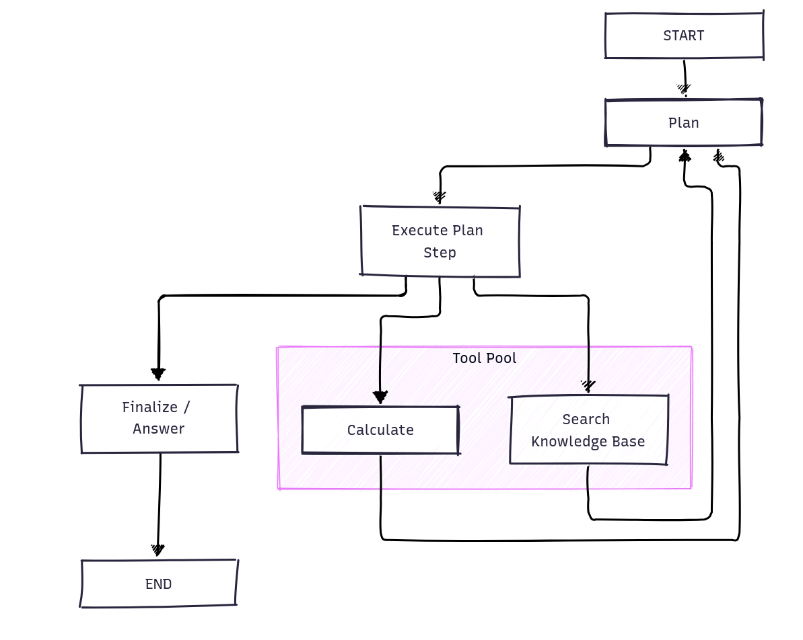

Rechenfrage
Erkanntes Prozentrechnen geht direkt an calculate. Der Rechner wertet Zahlen sicher aus und liefert das Ergebnis, bevor das LLM es formuliert.
Lokaler KI-Chatbot
LangGraph plant die benötigten Schritte, führt Suche und Rechnung aus und erstellt anschließend die finale Antwort.

02 · Steuerung
Das Routing entscheidet vor dem Sprachmodell, welche Fähigkeiten freigegeben sind und welcher Nachweis benötigt wird.
Erkanntes Prozentrechnen geht direkt an calculate. Der Rechner wertet Zahlen sicher aus und liefert das Ergebnis, bevor das LLM es formuliert.
GKV-Bezüge und Anschlussfragen werden mit dem Gesprächsverlauf angereichert und über search_knowledge_base recherchiert.
Nicht zugelassene Sachfragen enden mit einer festen Scope-Antwort. Das LLM wird für diese Fragen nicht aufgerufen.
03 · Wissensbasis
Kleine Markdown-Anlagen werden lokal indiziert; Treffer bleiben mit Inhalt und Dokumentmetadaten nachvollziehbar.
Anlagen mit Frontmatter und Dokument-ID
Ein vollständiger Chunk je Datei
Lokale Zusammenfassung, Begriffe und Dateiname
Semantik nur, wenn keine Keywords passen
Treffer müssen Dokumentmetadaten enthalten
LLM erhält nur die gefundenen Anlagen als Sachgrundlage
04 · Human in the loop
Der Agent soll Unsicherheit sichtbar machen, fehlende Angaben klären und keine unbelegte Sachantwort ausgeben.
Rückfragen wie „und bei Kindern?“ behalten ihren ursprünglichen Bezug.
GKV-Antworten benötigen erfolgreiche RAG-Treffer mit Quellenmetadaten.
Bei Unklarheit fragt der Agent gezielt nach, statt persönliche Umstände zu erraten.
Thinking, Tool-Ereignisse und finale Antworten landen in einem lokalen Session-Log.